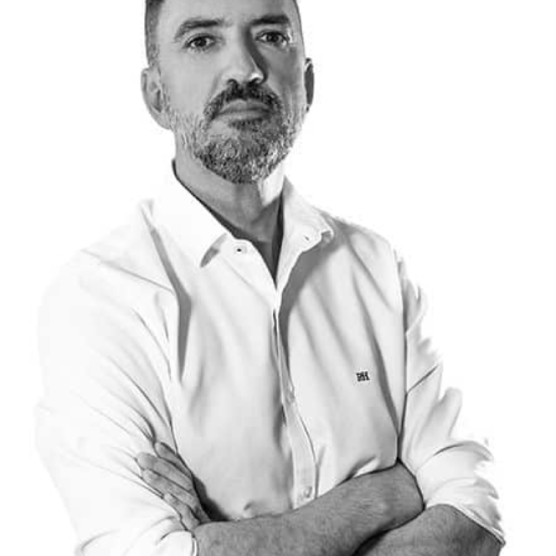
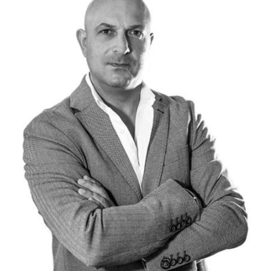
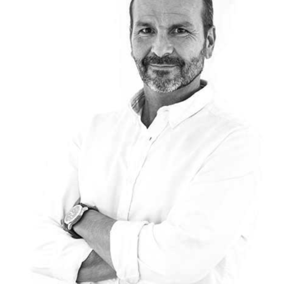
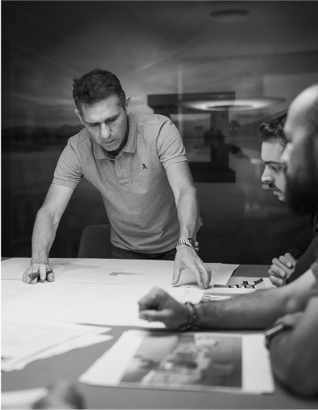
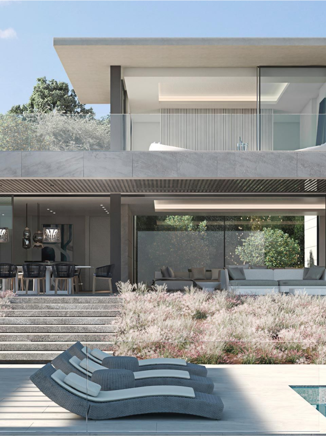

“The need to capture and understand this light, to play with it and tame it is one of the
key to success of our project”
Through the architecture and interior design of the home, we generate an ecosystem where
ideas flow to find solutions and innovate in all our projects. Evolving, researching and positioning
ourselves at the forefront of the latest methodologies, solutions and technologies in our sector is one of
the cornerstones of our philosophy for creating a unique project.
our team

Manuel J. Ruiz MoricheCreative Phase
Diego Suárez JuradoManagement Phase

Santiago Ruiz MoricheBuilding Phase

Jesús VázquezProject Manager

Our goal:to create
auniquehome.Where
peoplefindabalance
and a peace theynever
knewbefore.
Through the architecture
and interior design of the home, we generate an ecosystem where ideas flow to find solutions and innovate
in all our projects.
Evolving, researching and positioning ourselves at the forefront of the latest methodologies, solutions
and technologies in our sector is one of the cornerstones of our philosophy for creating a unique project.
Each luxury single-family home project is anything but
standard.

All of this makes each project a kind of living architecture that must work in a space and under certain
conditions so that the project meets its purpose: to be a unique living experience.
All our projects and the architecture and interior design of the home are
custom designed. Natural stone, wood, fabrics, engineering, the construction process, windows, plants,
etc.